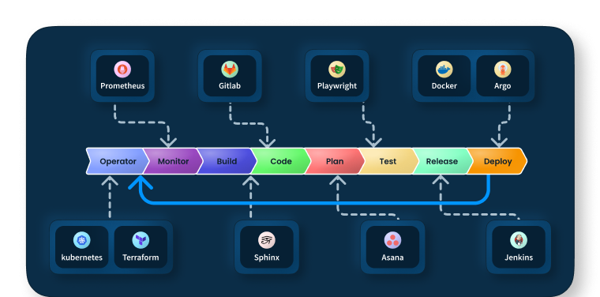

1. CI-CD Procedures¶
CI-CD is a set of practices that automates the process of integrating code into a shared repository. It’s a way to automate the building, testing, and deployment of software. The goal is to make the process of building, testing, and deploying automated so that you can release software more frequently and reliably.
Below is a diagram of the CI-CD process:
{kind=link}
The CI-CD process is broken down into the following steps:
1.1. Create a New Project¶
If you’re starting a new project, download the template which outlines what you need. Run the following command:
python3 -c "import mycelium; mycelium.create_template()"
1.2. Update the Template¶
Update the content of the template with more relevant information. Be sure to adhere to the protocol. You can use any text editor, for example:
vim README.md
1.3. Code, Build, and Run in Your Environment¶
Docker Build & Run
Run it with your desired module using the utils. Replace <your-container-tag> and <your-container-name> with your specific details. You may need to SSH tunnel a port (-p 5000:5000) or use gpus (–gpus-all)
docker build -t <your-container-tag>
docker run -d --name <your-container-name> <your-container-tag>
Docker Kill
docker rmi --force <iid>
docker system prune -a
docker kill <PID>
1.4. Update Your Test Files¶
Update your test files to reflect the changes you made to your code. You can use any text editor, for example:
vim tests/test_<your-module>.py
1.5. Push in the Dev Environment¶
Push your code to the dev environment. This will trigger a build and run in the dev environment. You can use the utils to push your code. Replace <your-container-tag> and <your-container-name> with your specific details.
mycelium.push <your-container-tag> <your-container-name>